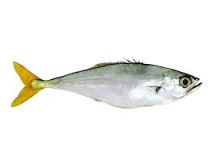
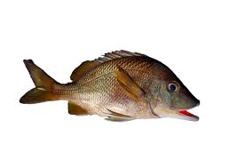
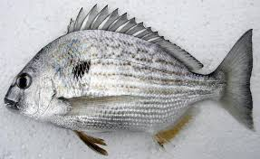

.png)
Lagoa da Conceição
Introdução
A Lagoa da Conceição fica em uma área central da ilha de Santa Catarina. Cercada por morros verdes, ela é destino imperdível para quem visita a cidade! A lagoa é um dos cartões-postais de Florianópolis, ideal para fazer um passeio de caiaque, pedalinho, praticar stand up paddle ou para tomar um sol sobre o gramado que fica em sua orla. Muitas pessoas aproveitam o entorno da lagoa para praticar exercícios, como kitesurf, ou simplesmente sentam-se às suas margens para curtir o visual e conversar num fim de tarde. Mergulhar na Lagoa da Conceição, no entanto, não é aconselhado, porque há pontos em que a água é imprópria para banho. Além das atividades aquáticas, a Lagoa da Conceição é um excelente ponto de partida para trilhas e passeios ecológicos, incluindo a famosa trilha para a Costa da Lagoa, onde cachoeiras e restaurantes acessíveis apenas por barco ou a pé oferecem uma experiência única.
Especies
Tainha

https://engeplus.com.br/noticia/economia/2016/epagri-pesquisa-criacao-de-tainhas-em-agua-doce
Mugilidae (conhecido também como tainha), peixe comumente encontrado em águas costeiras e estua-rinas, geralmente em locais rasos em cardumes perto das superfícies. Tem como principal característica ser um grande ativo comercial de várias regiões, como por exemplo Florianópolis, além de ter como ter comportamento migratório sempre se movendo para águas mais quentes durante o período do inverno e retornando ao seu local de reprodução no verão, configurando assim a famosa safra da tainha;
Bagre

https://cetesb.sp.gov.br/blog/2016/01/27/incidencia-de-ferimentos-causados-por-ferrao-de-bagre-preocupa-turistas/
Siluriformes (conhecido também como bagre), peixe comumente encontrado em costeiras tropicais e subtropicais em águas de pouca profundidade, possuindo o fundo arenoso ou lodoso. Tem como principais características ser um peixe de uma certa facilidade de ser pescado, ou seja, é um peixe característico da pesca esportiva, além de ser um peixe que consegue viver tanto em águas limpas tanto em águas com lama. Por fim sobre a alimentação do bagre, ele como desde caranguejos, pequenos peixes ou até mesmo plantas;
Robalo

peixe aaaaaaaaaaaaaaaaa
Centrpomus parallelus (conhecido também como robalo), peixe comumente encontrado em costas, porém para conseguir se alimentar o famoso robalo ocupa estuários e rios. Tem como principal hábito ser um peixe solitário além de ser um predador, que se alimenta principalmente de alimentos como crustáceos, moluscos, camarões e pequenos peixes;
Anchova

https://www.oceaninspiration.net/anchova/
A espécie Pomatomus saltatrix, mais conhecido como anchova é um peixe de corpo alongado, cor cinza-azulada, cabeça grande e mandíbula saliente. São encontrados em todo o litoral do Brasil, mais comum do Rio de Janeiro até Santa Catarina. Nada isoladamente ou em grandes cardumes (principalmente quando jovem). Difundia-se a ideia de que a anchova é um peixe de Inverno. Na verdade, embora os cardumes se aproximem mais da costa durante os meses mais frios, a anchova pode ser encontrada em quantidade e tamanho durante todo o ano. A anchova é um predador e sua alimentação é constituída basicamente de peixes menores, crustáceos e moluscos.
Baiacu

https://olhardigital.com.br/2024/02/12/ciencia-e-espaco/baiacu-e-perigoso-entenda-por-que-peixe-e-venenoso/
Tetraodontidae (conhecido também como baiacu), peixe comumente encontrado em formações coralinas. Tem como principal característica conseguir inflar o seu corpo, fazendo isto engolindo água ou ar, possuem o hábito de buscar alimentos no período noturno em áreas de vegetações marinhas e por fim possuem veneno que já ocasionou vítimas fatais, isso porque atingem os nervos vasomotores causando uma paralisia dos músculos responsáveis pela respiração;
Corvina

https://www.cpt.com.br/artigos/peixes-de-agua-doce-do-brasil-corvina-plagioscion-squamosissimus
Plagioscion squamosissimus (conhecido também como Corvina, Pescada-Branca e Pescada-do-Piauí) o Corvina é um peixe que habita poços, remansos e reservatórios, vivendo em lugares fundos e de meia água. Se caracteriza pela coloração prata azulada, boca oblíqua, com um grande número de dentes recurvados e pontiagudos, possui também espinhos nas nadadeiras e duas nadadeiras dorsais. Pode alcançar mais de 50 cm e atingir até os 4,5 kg.
Guaivira
https://fishcode.com.br/products/guaivira
Oligoplites saurus (conhecido também como guaivira, guaibira, goivira, cavaco, tábua, tiburo, tibiro, solteira e pamparrona) são encontrados perto da costa, geralmente ao longo de praias arenosas, em baías, enseadas e em águas doces, preferindo águas turvas. Eles ocorrem em cardumes, geralmente grandes e em movimento rápido, muitas vezes saltando para fora da água. Seu alimento geralmente quando estão na fase adulta são peixes menores e crustáceos. As espinhas dorsal e anal estão conectadas a glândulas venenosas que podem infligir feridas dolorosas caso seja ameaçado.
Cocoroca
https://fishcode.com.br/products/cocoroca
Sem informações.
Badejo
https://fishcode.com.br/products/badejo-quadrado
Acanthistius brasilianus (conhecido também como badejo), peixe comumente encontrado em plataformas continentais, manguezais, pântanos, brejos, em águas mais geladas e são encontrados geralmente entre o intervalo de profundidade de 15m até 82m. Tem como principais características ser um caçador de pequenos peixes, moluscos e crustáceos além de se juntar em cardumes no período de reprodução. Ele é um peixe hermafrodita, todos nascem fêmeas até atingir a maturidade, quando o sexo passa a ser masculino.
Robalo-flecha

https://fishcode.com.br/products/robalo-flecha
Centropomus undecimalis (conhecido também como robalo-flecha), peixe comumente encontrado em águas costeiras, estuários e lagoas em profundidades menores de 20 metros. Tem como principais características se reúnem em bocas de passagens em rios no seu período de desova e se alimentam principalmente de pequenos peixes, camarões e caranguejos.
Siri
https://animaldiversity.org/accounts/Arenaeus_cribrarius/
Arenaeus cribrarius (conhecido também como siri), espécie comumente encontrada em águas costeiras rasas e zonas de arrebentação que seria entre as marés, local no qual o animal se enterra. Tem como principal característica se alimentar de detritos orgânicos presentes nos locais arenosos em que ele geralmente se localiza, porém pode se alimentar também de peixes e crustáceos.
Sardinha
https://www.infoescola.com/peixes/sardinha/
Sardinella Brasilienses (conhecido também como sardinha), peixe comumente encontrado em águas costeiras e temperadas do oeste do Atlântico Sul, na profundidade aproximada de 5 metros até 60 metros. Tem como principais característica a grande versatilidade dentro do mercado alimentício podendo ser assada, frita, em conserva ou fresca. A sardinha se alimenta principalmente de plânctons, pequenos organismos e crustáceos.
Canhanha
https://pexesdalagoaumaova.blogspot.com/2010/11/peixe-rei_17.html
Archosargus rhomboidalis (conhecido também como canhanha e salema), peixe comumente encontrado em recifes, fundos de lama, manguezais, fundos arenosos com presença de vegetações e em profundidades de 1 metro até 40 metros. Tem como principais características se alimentar de animais invertebrados como crustáceos e animais bivalves, porém se alimentam também de material vegetal.
Linguado

https://fishcode.com.br/products/linguado
Pleuronectes lineatus (conhecido também como linguado), peixe comumente encontrado em costas, fundos lodosos e arenosos, quando a temperatura do ambiente que ele está cai, ele acaba optando por escolher locais mais profundos para se alojar. Tem como principais características se alimentarem de pequenos peixes como sardinhas e manjubas, porém se alimentam também de crustáceos.
Balneabilidade
Esse ano Em 21/05/2024, foram analisados a balneabilidade de nove trechos da Lagoa da Conceição. Em três desses trechos, as concentrações de coliformes fecais estavam dentro dos limites permitidos, com valores de 148 nmp/100ml, 10 nmp/100ml e 243 nmp/100ml, respectivamente, indicando que estavam próprios para banho. No entanto, em seis trechos, os níveis de coliformes fecais estavam acima do limite considerado seguro, variando de 278 nmp/100ml a 1674 nmp/100ml. Em datas anteriores, como em 25/03/2024, foram registrados picos alarmantes de coliformes fecais, atingindo valores como 2282 nmp/100ml, 2143 nmp/100ml, 4352 nmp/100ml e 3873 nmp/100ml, o que tornou esses trechos impróprios para banho. A média geral de coliformes fecais na Lagoa da Conceição foi de 523,1 nmp/100ml, o que classifica a maioria dos trechos como impróprios para banho, conforme os padrões de balneabilidade. Esses resultados destacam a necessidade contínua de investimentos em saneamento básico e gestão ambiental para preservar a qualidade da água e garantir a segurança dos frequentadores da lagoa.